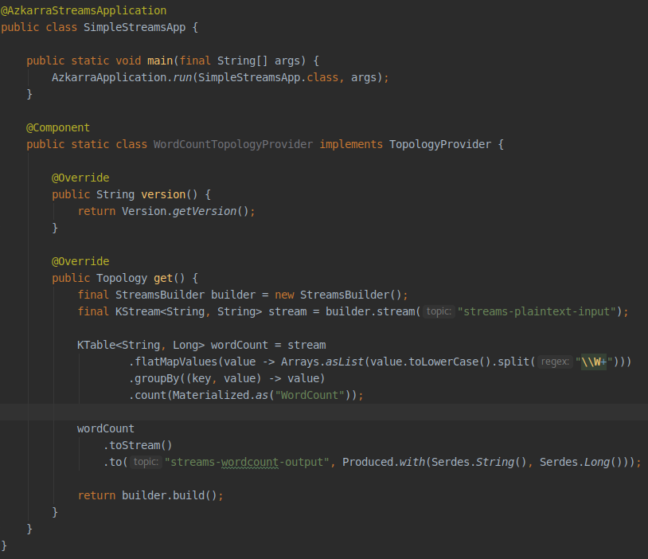

Easy to use API.
Azkarra Streams is a lightweight Java framework which makes easy to develop and operate Kafka Streams applications (Azkarra is Basque word for "Fast")

Highlights
- No more boilerplate code for running Kafka Streams.
- Easy externalization of configurations (using Typesafe Config).
- Web UI for topologies visualization.
- Provides REST endpoints for managing and monitoring local streams instances.
- Provides REST endpoints for Interactive Queries.
- Encryption and Authentication with SSL or Basic Auth.
{{< /blocks/lead >}}
{{< blocks/section color="white" >}}
{{% blocks/feature icon="fa-code" title="Developer-friendly features" %}}
- REST API for Interactive Queries
- Embedded Web UI (DAG visualization)
- Auto create topics
{{% /blocks/feature %}}
{{% blocks/feature icon="fa-cogs" title="Operations" %}}
- Healthcheck
- Metrics (Prometheus, JSON)
- Dead Letter Topic
- RocksDB Tuning
{{% /blocks/feature %}}
{{% blocks/feature icon="fa-shield-alt" title="Security" %}}
- Headless Mode
- TLS/SSL Encryption
- Basic Authentication
- Client Certification Authentication
{{% /blocks/feature %}}
{{< /blocks/section >}}
{{< blocks/section color="dark" >}}
{{% blocks/feature icon="fab fa-github" title="Contributions welcome" %}}